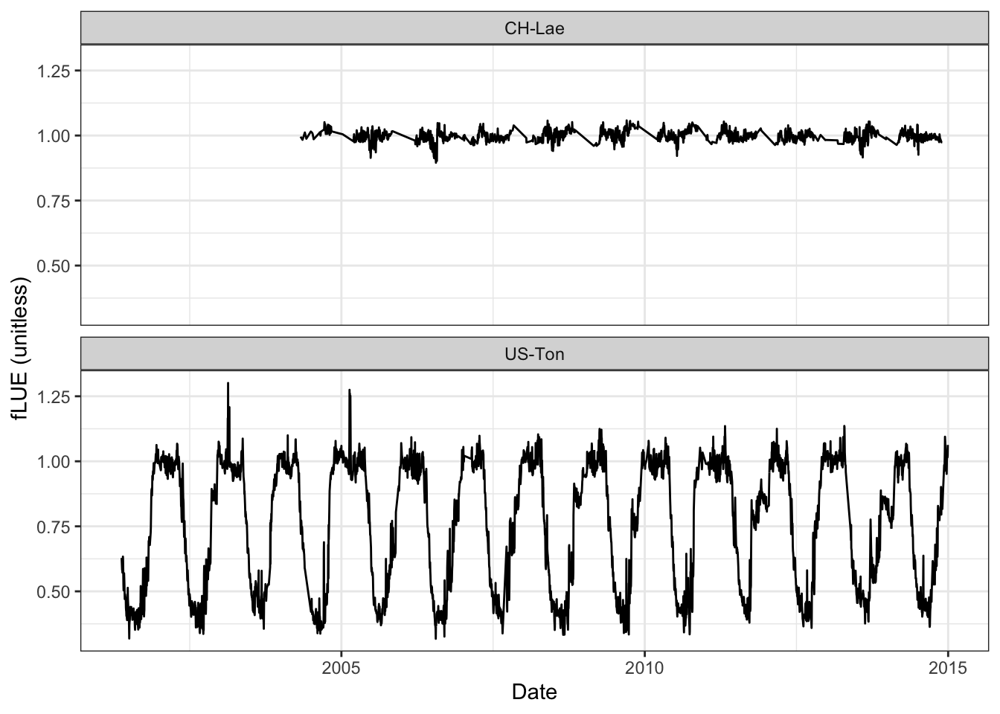
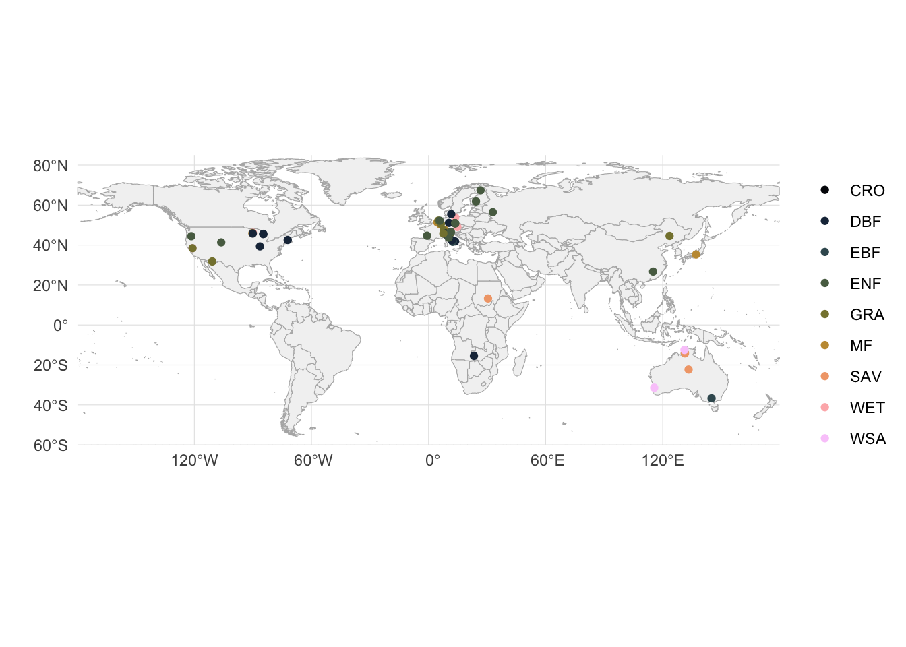
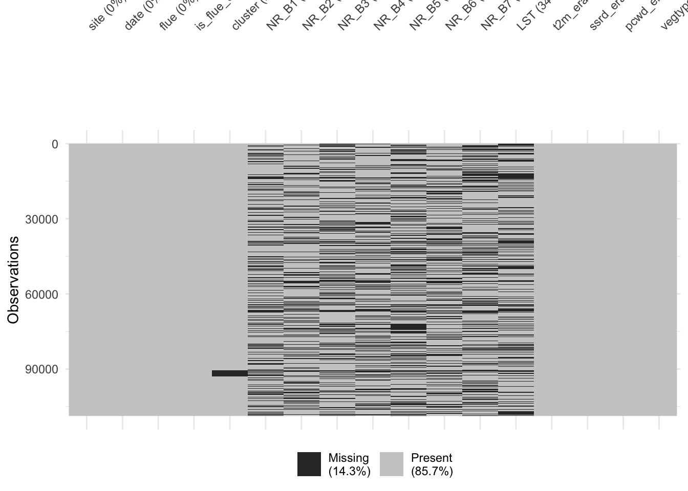

library(tidyverse)
library(here)
library(rnaturalearth)
library(khroma)2 Context
2.1 The challenge
Droughts have far-reaching consequences for ecological and socio-economic systems. Different types of droughts are typically distinguished based on the variable in which a “drought” is expressed:
- Precipitation: a shortage of precipitation can lead to a meteorological drought, particularly when occurring in a period with high radiation. Its identification and quantification relies on meteorological data.
- Soil moisture: a shortage of soil moisture can lead to a agricultural drought or soil moisture drought. Its identification and quantification can be based on soil moisture observations, data on yields in agriculture, or on estimates of vegetation greenness or primary production which is typically obtained from satellite remote sensing data.
- Streamflow: low streamflow is the basis for the identification of. a hydrological drought.
In this tutorial, we will focus on soil moisture droughts and its identification from satellite remote sensing data.
Different types of remote sensing can be used to measure different aspects of the vegetated land surface and its response to droughts. A widely used approach is to consider vegetation greenness indices, derived from the imaging of multispectral reflectances, e.g., from the MODIS satellite mission. This mission has generated data products, e.g., of the Normalised Difference Vegetation Index (NDVI) and the Enhanced Vegetation Index (EVI) at 250 m spatial resolution and an 8-day temporal resolution, covering years since 2000. Analyses of NDVI and EVI variations during droughts have been key for identifying and quantifying impacts of droughts on vegetation greenness, and therefore on primary productivity.
However, a shortage of moisture across the rooting zone of plants can trigger effects on ecosystem functioning, including the assimilation of CO2 by photosynthesis or the transpiration of water vapor, long before effects are expressed in canopy structural changes through reduced greenness. Therefore, this physiological response is much harder to estimate from remote sensing data than the structural response.
An opportunity may lie in the effective use of the full information available from multispectral remote sensing, and by additionally pairing satellite remote sensing with climate data. Greenness indices such as the NDVI or EVI reduce the available spectral reflectance data of eight separate wavelength bands plus the thermal band available from MODIS to a single index. This implies a loss of information and a potential lack of representativity for drought impacts on ecosystem carbon and water balances. However, given sufficient training data, this information may be effectively exploited by data-driven models to estimate the physiological response – separate from the structural response.
Of course, the training data for such models is a bottleneck. Measuring the physiological response of droughts – often invisible to the human eye and greenness indices – has to rely on other observation types that are not easily scalable in space. Such observations may be obtained at the leaf-level (e.g., gas exchange measurements), tree-level (e.g., sapflow or tree water deficit measurements), or ecosystem-level with limited spatial representativity (e.g., eddy-covariance measurements of ecosystem-atmosphere exchange fluxes).
2.2 Data
Here, we make use of ecosystem-level data that is based on eddy covariance measurements and estimates the fractional reduction in the light use efficiency of ecosystem photosynthesis due to soil moisture stress (fLUE). These estimates are derived from the approach developed by B. D. Stocker et al. (2018). Data is available on Zenodo (B. Stocker 2018). The advantage of these data is that it provides continous observations over the course of several years, representative for canopy-integrated ecosystem-level fluxes, and available from a diverse set of sites, distributed across different climate zones and vegetation types in different regions globally.
Let’s start by reading the data.
# read data
df <- read_rds(here("../data/competition2025_training_data.rds"))
# read site meta information
df_site_metainfo <- read_csv(here("../data/fdk_site_info.csv"))Rows: 339 Columns: 15
── Column specification ────────────────────────────────────────────────────────
Delimiter: ","
chr (5): sitename, koeppen_code, igbp_land_use, product, c3c4
dbl (10): lon, lat, elv, year_start, year_end, canopy_height, reference_heig...
ℹ Use `spec()` to retrieve the full column specification for this data.
ℹ Specify the column types or set `show_col_types = FALSE` to quiet this message.# construct data frame containing site meta info for sites for which we have the data
# note: for some sites missing information
df_sites <- df |>
select(site, vegtype) |>
distinct() |>
left_join(
df_site_metainfo |>
rename(site = sitename),
by = join_by(site)
)The dataset df contains all the variables we use for model training.
Target:
flue: fractional light use efficiency, a measure of soil moisture stress
Predictors:
NR_B1: Nadir reflectance in MODIS band 1, 620–670nm (-)NR_B2: Nadir reflectance in MODIS band 2, 841–876nm (-)NR_B3: Nadir reflectance in MODIS band 3, 459–479nm (-)NR_B4: Nadir reflectance in MODIS band 4, 545–565nm (-)NR_B5: Nadir reflectance in MODIS band 5, 1230–1250nm (-)NR_B6: Nadir reflectance in MODIS band 6, 1628–1652nm (-)NR_B7: Nadir reflectance in MODIS band 7, 2105–2155nm (-)LST: Land surface temperature (Kelvin)t2m_era5: 2-m air temperature (Kelvin)ssrd_era5: Surface solar radiation downwards (W/m2)pcwd_era5: Potential cumulative water deficit (mm)vegtype: Vegetation type
Meta data:
site: Fluxnet site namedate: dateis_flue_drought: a flag for drought conditions based on fLUE
The meta data may be used for defining the model training.
The data has a certain structure. Values are for the target variable, all predictor variables, and meta data, given for a set of consecutive dates spanning multiple years, provided at multiple sites. Years of data covered by sites are not necessarily identical, but often overlap.
Code
df |>
filter(site %in% c("US-Ton", "CH-Lae")) |>
ggplot(aes(date, flue)) +
geom_line() +
facet_wrap(~site, ncol = 1) +
labs(x = "Date", y = "fLUE (unitless)") +
theme_bw()
Next, let’s get an overview of the locations (based on lon and lat) and vegetation types from where data is available.
Code
# plot on world map
world <- ne_countries(scale = "medium", returnclass = "sf")
ggplot() +
# world country outlines
geom_sf(data = world, fill = "gray95", color = "gray70", size = 0.2) +
geom_point(data = df_sites, aes(lon, lat, color = vegtype)) +
scale_color_batlowK(discrete = TRUE, name = "") +
# coordinate system (preserves lat/lon aspect)
coord_sf(
ylim = c(-60, 85),
expand = FALSE # to draw map strictly bounded by the specified extent
) +
# labels and theme
labs(
x = "",
y = ""
) +
theme_minimal() +
theme(
panel.grid = element_line(color = "gray90", size = 0.2),
legend.position = "right"
)
Unfortunately, we’re dealing with some missing data.
Code
visdat::vis_miss(
df,
warn_large_data = FALSE
)